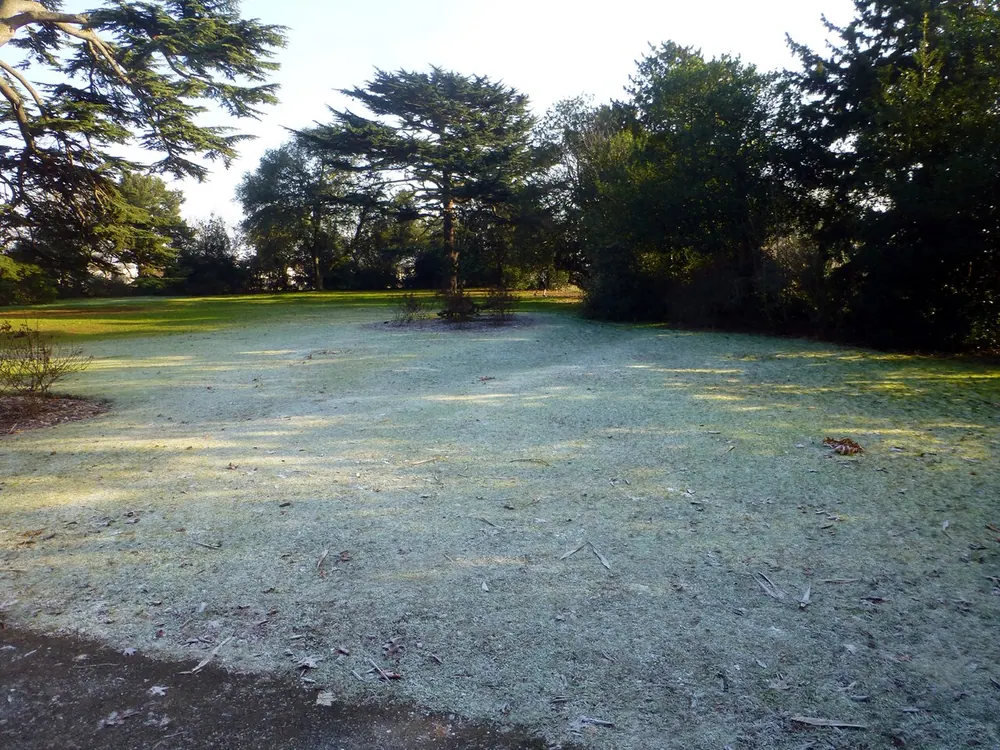

The story
In 1963 a Tanzanian schoolboy, Erasto Mpemba, noticed that warm ice-cream mix froze faster than cold in the same tray. His physics teacher told him he was confusing the question with the answer; he persisted, and in 1969 he and Denis Osborne published a short paper in Physics Education reporting the effect and naming it.
The paper is careful and the observations are ordinary. What followed is a fifty-year argument about whether the phenomenon exists, and if it does, what it is.
Why it is so hard to settle
Freezing is not one process. Water can cool to 0 °C, supercool below it, nucleate at different points depending on the container and its dissolved gas, and freeze from the outside in while convection mixes the interior. A container of hot water starts with convection that cold water does not, loses mass by evaporation, holds less dissolved gas, and may nucleate differently.
So 'hot freezes faster' can mean five different things: reaching 0 °C sooner, starting to freeze sooner, finishing freezing sooner, supercooling to a lower temperature, or having less ice at a given time. Experiments that define it differently get different answers, and reviews have found the positive results are sensitive to every one of those choices.
Reported: many times, including by professional physicists, under controlled conditions.
Not robust: the effect disappears when the protocol is standardised across labs. A 2016 review concluded that the published evidence is consistent with several ordinary mechanisms rather than one anomaly.
Explanations on the table: evaporation, convection, dissolved gases, supercooling, thermal contact with the container, and hydrogen-bonding structure in the 2020 proposal that got the most press.
What would settle it: one agreed definition, one protocol, several labs, and a result that survives. Nobody has run that experiment.
Why it is in the archive
Because it is the archive's clearest case of a claim that may well be true and is certainly not established — and where the interesting failure is not the claim but the reporting. A schoolboy's careful observation became a headline about physicists being wrong, when the physicists were mostly arguing about definitions.
Maps, diagrams and images

.jpg){kind=link}

Open resources on this topic
- BookAnomalous cooling and heating - the Mpemba effect and its inverse — ['Zhiyue Lu', 'Oren Raz'] · 2016 (Internet Archive, free to read)
- BookQuestioning the Mpemba effect: hot water does not cool more quickly than cold — Henry C. Burridge, Paul F. Linden · 2016 (Internet Archive, free to read)
- PapersOpen-access articles: DOAJ · PubMed Central · Internet Archive Scholar
- BooksPublic-domain and borrowable copies: Open Library · Project Gutenberg · Google Books
More images
Cite this page
Momin, S. (2026). The Mpemba Effect. The Larger World Archive. https://drsamonline.github.io/LARGE_GLOBE/mpemba-effect.htmlMomin, Sohil. “The Mpemba Effect.” The Larger World Archive, 2026, https://drsamonline.github.io/LARGE_GLOBE/mpemba-effect.html.Momin, Sohil. “The Mpemba Effect.” The Larger World Archive, 2026. https://drsamonline.github.io/LARGE_GLOBE/mpemba-effect.html.@misc{the2026mpemba,
author = {Momin, Sohil},
title = {The Mpemba Effect},
year = {2026},
howpublished = {The Larger World Archive},
url = {https://drsamonline.github.io/LARGE_GLOBE/mpemba-effect.html},
note = {Last reviewed 20 November 2026}
}Last reviewed 20 November 2026 · Corrections policy · this page is not peer reviewed
Sources for this page
- Wikipedia, “Mpemba effect” — history, replications and mechanismsen.wikipedia.org
- Mpemba & Osborne (1969), Physics Education — the original reportdoi.org
- Wikipedia, “Supercooling” — why freezing is not a single eventen.wikipedia.org
- Wikipedia, “Nucleation” — what actually starts a crystalen.wikipedia.org